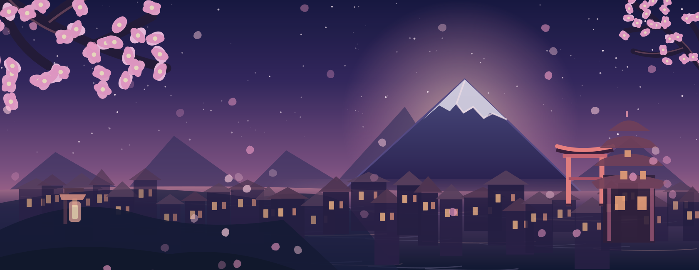
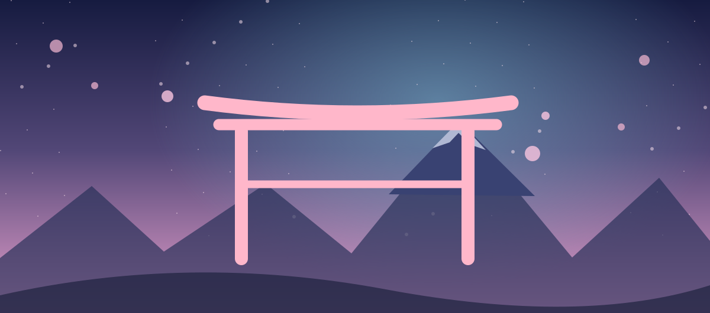
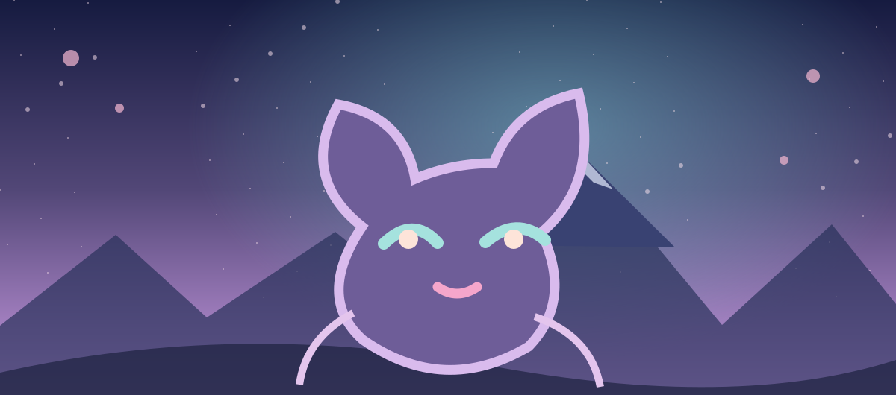

01 / 06
01 / 06STORIE E CONNESSIONI
Universe & Nexus
Unisci franchise, autori, personaggi, generi e origini dell’animazione.

Esplora. Scopri. Collega.
Anime, manga, musica, luoghi e cultura giapponese
in un universo interattivo fatto di storie e passioni.
Non una lunga fila di link: sei grandi portali che collegano archivi, persone, musica, Giappone, collezioni e le tue storie. Tutti i percorsi già presenti restano accessibili.
01 / 06Unisci franchise, autori, personaggi, generi e origini dell’animazione.
 02 / 06
02 / 06Tieni insieme opere, volumi registrati, edizioni e case editrici.
 03 / 06
03 / 06Dal Giappone reale alle parole che ascolti negli anime.
Report, dossier, notizie editoriali e la rivista mensile.
Quiz, consigli basati sul catalogo e diario personale.
“Ogni storia è un ponte verso un nuovo orizzonte.”
夢は、まだ続いている。Il Giappone degli anime, la cucina, i viaggi, i miti e la storia ora hanno una casa tutta loro all'interno di Yume 3.0.
Entra in Yume Japan
Il Giappone degli anime40 luoghi ↗ Cucina giapponese148 ricette · 165 ingredienti ↗Viaggio in Giappone141 destinazioni ↗

Yōkai e leggende340 voci ↗ Storia del Giappone21 periodi ↗Trova anime, manga, luoghi, esperienze interattive, confronti e articoli in un unico punto.
Inserisci almeno tre caratteri per avviare la ricerca.
Il viaggio continua nella libreria originale di Yume.
← Torna alla home di Yume